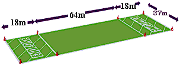

Who are we?
We are an Ultimate Frisbee team with 2 Open (OW! 1 and OW! 2) teams, a woman's team (WOW!) and a mixed team (COW!) all of whom represent the University of Oxford.
Can I play?
Of course you can! All of our team are super friendly and are always willing to recruit new members. Come along to one of our pickup sessions or university practicies! Find out whats happening on the training page!
You can always check-out what your college is doing for Ultimate for that genuine, organic, "closer-to-home" Ultimate experience! Check out the contact page for details of the college captains.
Those of you who are interested in playing club Ultimate please check out our affiliates!
What is Ultimate?
Ultimate (shortened from "Ultimate Frisbee" because of trademarks) is an exciting, non-contact team sport, played by hundreds of thousands of athletes the world over. It mixes the best features of sports such as Football, Basketball, American Football and Netball into an elegantly simple yet fascinating and demanding game. To compete at the top level, Ultimate players require an unmatched degree of speed, stamina and agility.
Ultimate is played by two teams of 7 players. Players cannot run with the disc. When you get the disc you must come to a stop and try to throw it to another player (a bit like netball). By passing from player to player, the offence attempts to work the disc up the pitch towards the endzone they are attacking. If the disc hits the ground or is intercepted or knocked down by the other team, then the opposition takes possession (a change of possession is called a "turnover", like American Football). Possession also changes if a receiver is outside the playing area when he or she catches it.
The defending team attempts to stop the team with the disc from making progress upfield by marking them (as in soccer or basketball). The theory is that the offence won't want to pass to a player who is being marked closely, as it's likely to result in an interception. So it boils down to the offence players trying to get free of their markers to receive a pass, while the defence makes every effort to stay with them in the hope of forcing a turnover.